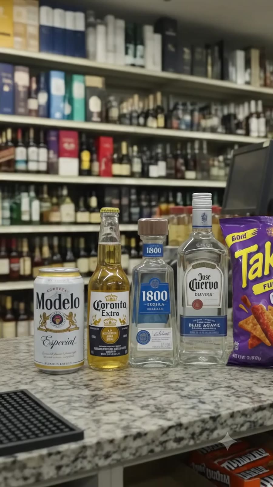
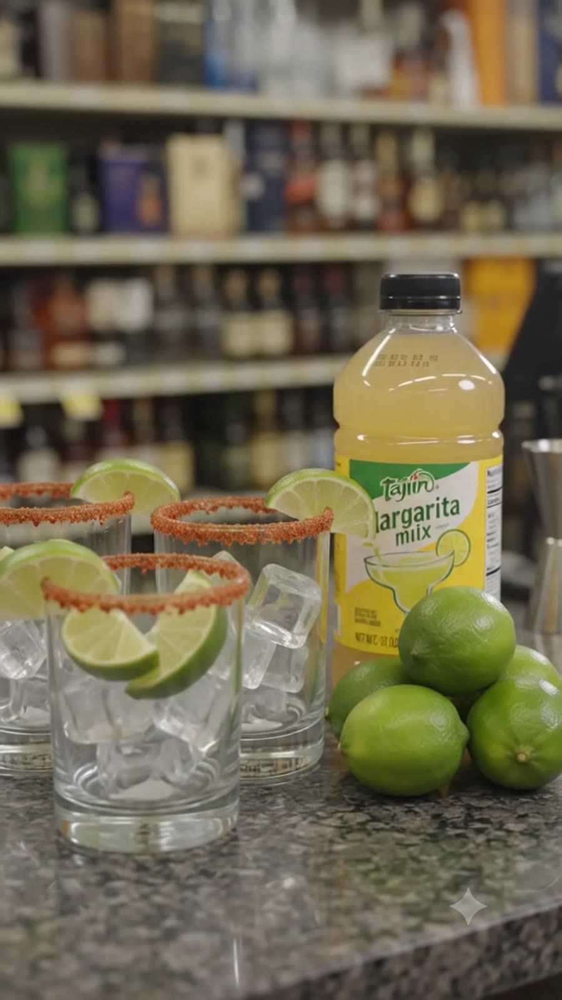
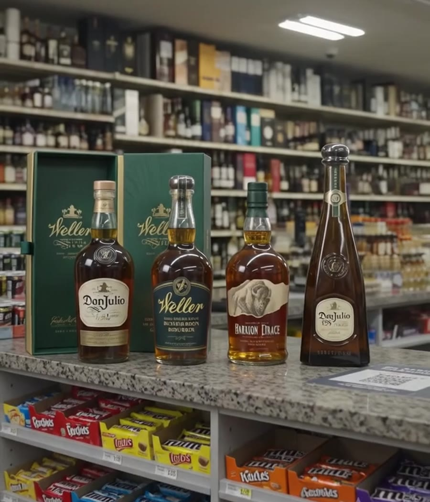
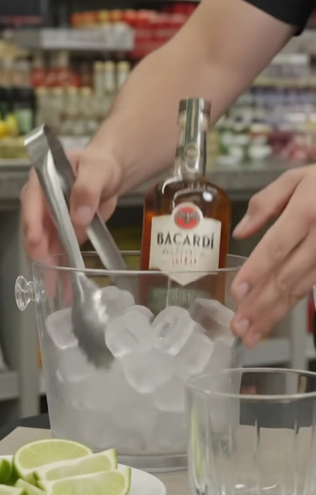
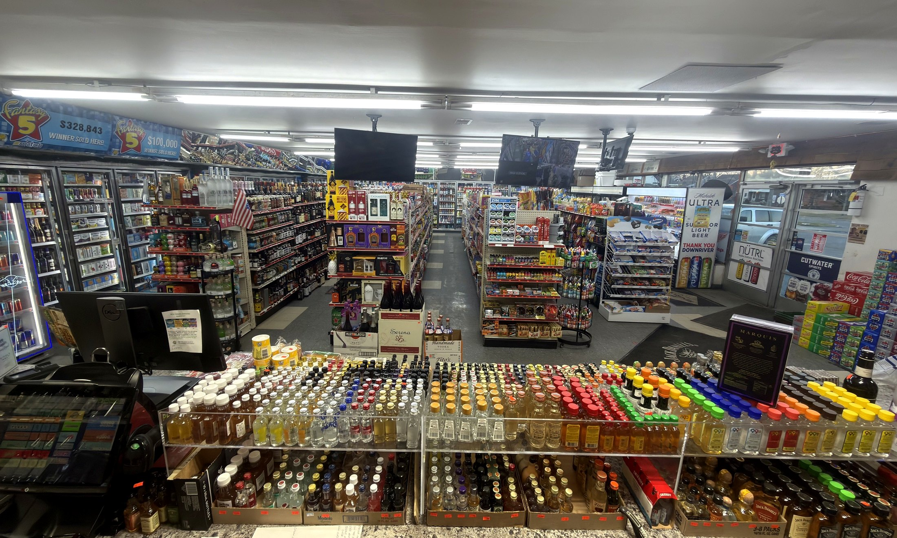

Bottle check
Ask about a tequila, whiskey, vodka, rum, gin, brandy, or popular handle before you arrive.
Lincoln Park neighborhood market
Harrison Liquor & Wine Market is built for the fast stop: stocked bottle walls, cold drink favorites, mixers, snacks, lottery, and everyday pickup items.
Shop by need
Ask about a tequila, whiskey, vodka, rum, gin, brandy, or popular handle before you arrive.
Grab beer, seltzers, singles, cases, mixers, soda, juice, and ready-to-go drinks.
Start with the bottle or beer you want, then add mixers, snacks, candy, or grocery basics.
Lottery, candy, chips, soda, juice, convenience items, and last-minute essentials in one visit.
Customer favorites
Real counter and reel shots, used as shopping examples. For a specific brand, size, flavor, case, mixer, or snack, send a request before you drive over.

Quick runs often start with beer or a bottle, then chips, candy, soda, or another easy add-on.
Check a brand
Ask about tequila, margarita mix, citrus flavors, soda, juice, and snacks for a simple hosting stop.
Ask about mixers
Looking for whiskey, tequila, vodka, rum, brandy, wine, or a premium bottle? Request a bottle check.
Check a bottle
Mixers, soda, juice, ice, snacks, candy, lottery, and grocery basics help complete the same trip.
Send your listCustomer request form
Use this form for bottle checks, case requests, wine questions, mixer/snack requests, keg questions, customer feedback, and product suggestions.



Lincoln Park and Downriver
Harrison Liquor & Wine Market serves Lincoln Park customers and nearby Downriver routes from Allen Park, Southgate, Wyandotte, Dearborn, and Ecorse.
Search-friendly, customer-friendly, and simple: call ahead, send a request, or stop in for liquor, wine, beer, mixers, snacks, lottery, and convenience basics.
Visit
Quick answers
Yes. Use the request form to email the store a product name, size, quantity, and when you need it.
Liquor, wine, cold beer, mixers, snacks, candy, lottery, grocery basics, and convenience items.
735 Harrison Blvd, Lincoln Park, MI 48146.
Sunday-Thursday 10:00 AM-10:00 PM. Friday-Saturday 10:00 AM-11:00 PM.